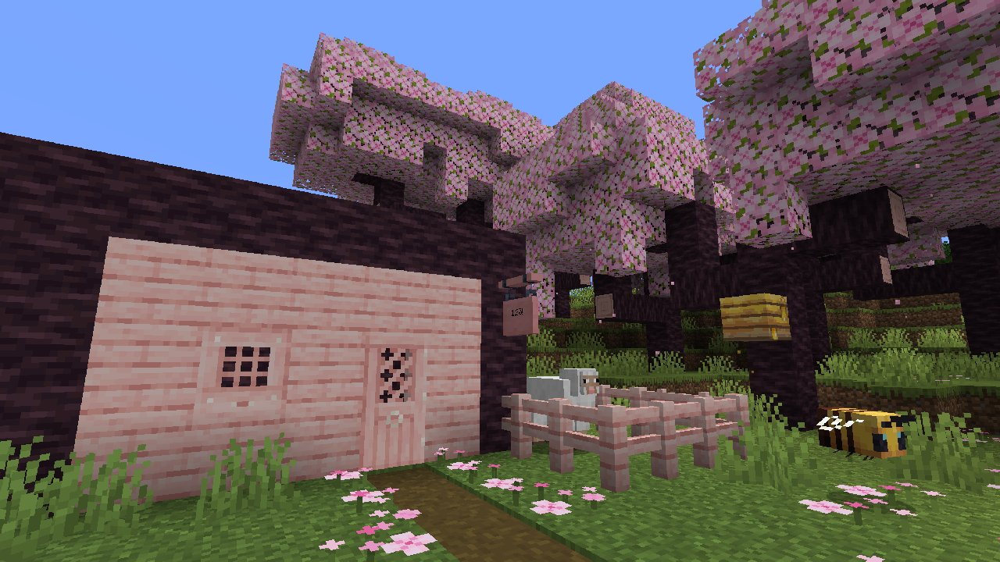
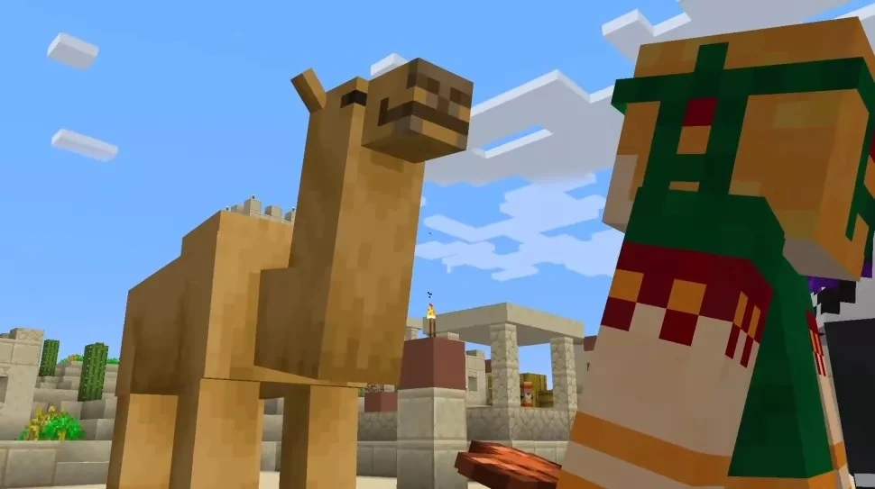
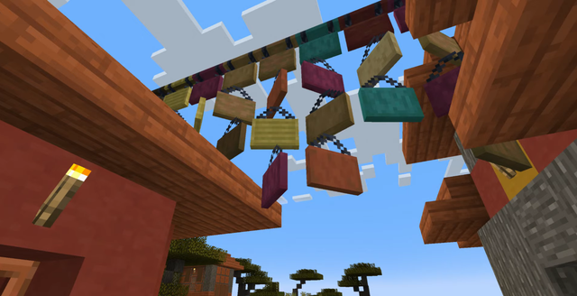
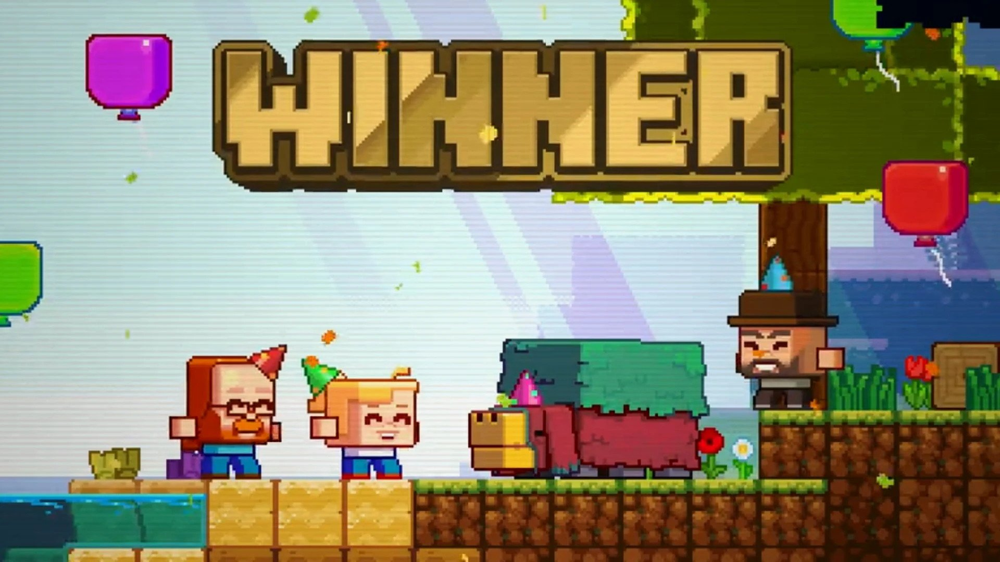

The minecraft version entered the game on June 7, 2023, a year after the previous version of the game.
The update introduces a lot of content to the game, including:
Cherry Blossom Biome
The cherry blossom biome is covered in pink leaves, and the flowers around it are also pink to maintain the fairytale feel. There are no exclusive mobs in the biome, most often we can encounter bees, pigs or sheep.
along with the new biome, we get new wood and their products, everything maintains a bright pink color scheme

Camels
Camels are another change introduced to the game, but this time in the form of a mob. Camels behave like an ordinary horse, you can control them, feed them, breed them, or jump over holes with them. After all, camels are much slower than horses. In return, we can ride a camel by two people, which in the case of a horse was only one person
Camels only spawn in desert biomes

New signs and text editing
For many years players were annoyed by the fact that if we made a mistake in the text entered on the tablet, we had to destroy the tablet and put it up again in order to edit it, it's a thing of the past! Now by right-clicking on the plate, you can edit its text, that's not all! We can now enter text from both sides of the tablet
In addition, in this update we got a new variant of the plate, the hanging variant, we can hang it, which looks great

New offline player skins
For many years minecraft players had to face the choice, Steve or Alex, but from 1.20 they have more choice! As many as 7 new skins named the Noor, Sunny, Ari, Zuri, Makena, Kai, and Efe generations have been added to the game.

Archeology
Archeology was announced a long time ago, and caught the attention of many people, its topic was then closed until the announcement of 1.20! We received a slightly changed system of archeology than the one that was shown to us a few years ago, but it still has a very interesting function
Archeology has added two new block variants, including Suspicious Sand and Suspicious Gravel. They reveal various objects, such as shards of pottery that we can use to decorate our vases. Discovery is by using the brush on suspicious blocks

Trims customization
Mojang decided to allow players to customize their armor by adding 16 patterns and 10 colors. Coloring consists in applying some raw material, and the pattern we choose is a bit more complicated.
For many years, visiting structures several times didn't make much sense, but now it does because in structures we find templates with time more and sometimes less chance

Bamboo Wood
Mojang doesn't stop at the new biome! A new tree has been added.. bamboo! And instead of boats, there are rafts which look epic compared to boats! We can make many new products from bamboo alone

Sniffer voting mob
Sniffer, a mob chosen from a vote that took place in 2022. Sniffer has the ability to sniff out plants, which may soon manifest itself in new types of farms!
The sniffer moves slowly and his movement is random. In creative mode we can spawn a sniper with a special mob egg, or even in survival mode with a red/green rectangular egg that symbolizes the texture and shape of the mob

New bookshelves variant
Finally, the bookshelves got some other functionality than just increasing the enchantment level, now we can make them a new "Chiseled" variant where we can freely put all kinds of books that we can pull out later

And more...
These are just the major changes, but that's not all that's in this update! In 1.20 we can now use many new commands, encounter a new small structure in which we can find a lot of suspicious variants of sand and gravel. New menu design in Creative mode, more mob heads and the ability to enable characteristic sounds by placing the head on a noteblock. A calibrated variant of the skulk sensor. In addition, the Bedrock edition has undergone several changes, such as a new crawling animation or completely new commands